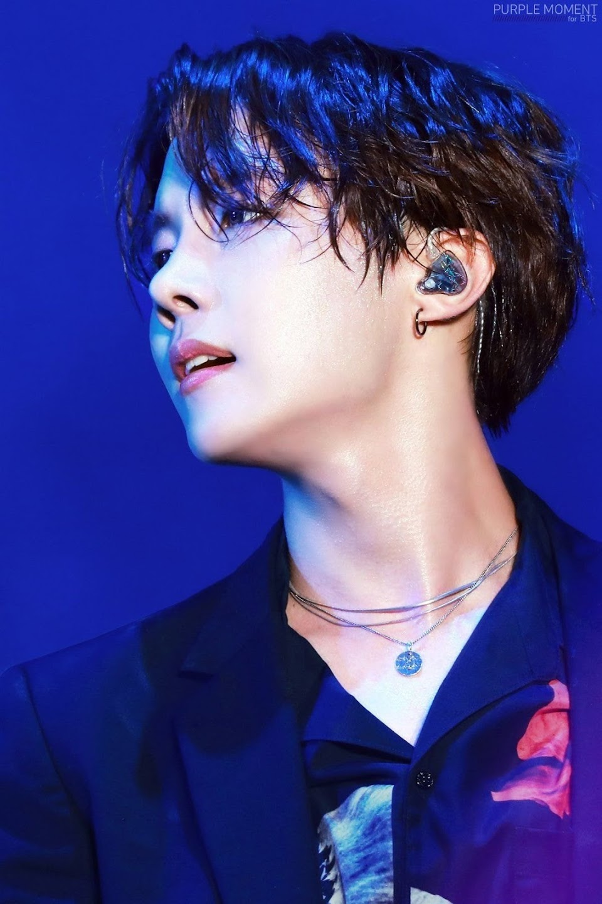

Kim Nam-joon (Korean: 김남준; born September 12, 1994), known professionally as RM (formerly Rap Monster), is a South Korean rapper, songwriter, and record producer. He is the leader of South Korean boy band BTS.
Path towards joining BTS
RM selected the name "Rap Monster" during his time as an idol trainee. The name derives from the lyrics of a song he wrote, inspired by San E's "Rap Genius". The lyrics contained a segment where San E declares he should be called a "rap monster" as he "raps non-stop". He adopted the stage name because he felt it was "cool". RM has described himself as having a love-hate relationship with the name, feeling that it was not selected for being of "incredible value" to him.
He formally changed his stage name to "RM" in November 2017, as he determined that "Rap Monster" was no longer representative of who he was or the music that he creates. In an interview with Entertainment Tonight in 2019, RM stated that the name "could symbolize many things" and "could have more spectrums to it." One meaning that has been suggested is "Real Me".
In 2009, RM auditioned for Big Deal Records, passing the first round along with Samuel Seo but failing the second round after forgetting lyrics. However, following the audition, rapper Sleepy exchanged contact information with RM, whom he later mentioned to Big Hit Entertainment producer Pdogg. In 2010, Sleepy contacted RM, encouraging him to audition for Big Hit Entertainment CEO Bang Si-hyuk. Bang offered RM, then aged 16, a spot at the record label, which he accepted immediately and without his parents' knowledge. Bang and Pdogg soon began forming a hip hop group that would eventually become the idol group BTS.
RM trained for three years with fellow rapper Min Yoon-gi and dancer Jung Ho-seok, later known as Suga and J-Hope, respectively. During this three-year trainee period, RM performed on five pre-debut tracks credited to BTS in 2010 and 2011. He also worked as a songwriter for girl group Glam and helped pen their debut single "Party (XXO)", a pro-LGBTQ song that was praised by Billboard as "one of the most forward-thinking songs out of a K-pop girl group in the past decade." On June 13, 2013, RM made his debut with BTS and has since produced and written lyrics for many tracks on their albums. On August 29, 2013, RM performed the intro track to BTS' first extended play (EP) O!RUL8,2?, which was released as a trailer ahead of the EP's September 11 release, marking his first solo after debuting.
Jin
Kim Seok-jin (Korean: 김석진; born December 4, 1992), known professionally as Jin (진), is a South Korean singer, songwriter, and member of the South Korean boy band BTS.
Path towards joining BTS
Jin was scouted by Big Hit Entertainment for his looks while walking down the street—he was studying acting at the time and had no background in music—and subsequently auditioned as an actor for the company before becoming an idol trainee. On June 13, 2013, he made his debut as one of the four vocalists in BTS. Under the band's name, Jin has performed three solo songs: "Awake", "Epiphany", and "Moon". "Awake", which he co-produced, was released in 2016, as part of BTS' second Korean studio album Wings. The song peaked at number 31 on the Gaon Digital Chart and number six on the Billboard World Digital Song Sales chart in the United States. He shared a Christmas version of "Awake" for free on SoundCloud that December.
Suga
Min Yoon-gi (Korean: 민윤기; born March 9, 1993), known professionally by his stage names Suga (슈가; stylized in all caps) and Agust D, is a South Korean rapper, songwriter and record producer. Under Big Hit Entertainment, he debuted as a member of the South Korean boy band BTS in 2013.
Path towards joining BTS
Suga became interested in rap after hearing "Ragga Muffin" by Stony Skunk, stating that it was different from anything he had ever heard before. After hearing Epik High, he decided to become a rapper.
By age 13, he began to write music lyrics and learned about MIDI. He worked a part-time job at a record studio by age 17. From then on, he began composing and arranging music, rapping, and performing. Before being signed, he was active under the name Gloss as an underground rapper. As part of the hip hop crew D-Town in 2010, he produced "518-062", a song commemorating the Gwangju Uprising.
Originally joining the company as a music producer, Suga trained under Big Hit Entertainment for three years alongside bandmates J-Hope and RM. He made his debut as a member of BTS on Mnet's M Countdown with the track "No More Dream" from their debut single album 2 Cool 4 Skool. He has produced and written lyrics for a variety of tracks on all of the band's albums.
J-hope

Jung Ho-seok (Korean: 정호석; born February 18, 1994), better known by his stage name J-Hope (stylized in lower case), is a South Korean rapper, singer-songwriter, dancer, and record producer. He made his debut as a member of South Korean boy band BTS in 2013, under Big Hit Entertainment.
Path towards joining BTS
Before debuting with BTS, J-Hope was part of an underground dance team called Neuron, and took dance classes at Gwangju Music Academy for six years, from fourth grade to his first year in high school when he signed with Big Hit Entertainment. He was relatively well known for his dance skills, and won various local prizes, including first place in a national dance competition in 2008. His dancing eventually led to an interest in singing, and he auditioned to become an idol trainee. While a trainee, J-Hope appeared as a featured rapper on singer Jo Kwon's song "Animal", released in 2012.
Jimin
Park Ji-min (Korean: 박지민; born October 13, 1995), known mononymously as Jimin, is a South Korean singer and dancer. In 2013, he made his debut as a member of the South Korean boy band BTS, under the record label Big Hit Entertainment.
Path towards joining BTS
Park Ji-min was born on October 13, 1995, in Geumjeong District, Busan, South Korea. His immediate family includes his mother, father, and younger brother. When he was a child, he attended Busan's Hodong Elementary School and Yonsan Middle School. In middle school, he attended Just Dance Academy, where he learned popping and locking. Prior to becoming a trainee, Jimin studied contemporary dance at Busan High School of Arts and was a top student in the modern dance department. A teacher suggested that he join an entertainment company, leading him to Big Hit Entertainment. Once he passed the auditions in 2012, he transferred to Korean Arts High School, graduating in 2014.
Jimin was the last Big Hit trainee to be added to the lineup that would eventually become BTS. Of the band's seven members, he spent the shortest period of time—six months—as a trainee prior to debuting. On June 13, 2013, he debuted as a vocalist and dancer in BTS with the song "No More Dream" from their first single 2 Cool 4 Skool.
Taehyung
Kim Tae-hyung (Korean: 김태형; born December 30, 1995), known professionally as V (뷔), is a South Korean singer and a member of the boy band BTS.
Path towards BTS
V was born Kim Tae-hyung on December 30, 1995, in the Seo District of Daegu, and grew up in Geochang County. He is the eldest of three children, with a younger brother and sister. V first aspired to be a professional singer in elementary school. With his father's support, he began taking saxophone lessons in early middle school as a means of pursuing a musical career. V eventually became a trainee for Big Hit Entertainment after passing an audition in Daegu.
Pre-debut, V was the "secret member" of BTS: fans were unaware of his existence as his agency wished to keep him a surprise. He later stated that the concept made him feel lonely and uneasy at the time as he thought it was because he might be cut from the lineup. On June 13, 2013, he made his debut as a member of BTS on Mnet's M Countdown with the track "No More Dream" from the band's debut single album 2 Cool 4 Skool.
Jungkook
Jeon Jung-kook (Korean: 전정국; born September 1, 1997), also known mononymously as Jungkook (stylized as Jung Kook), is a South Korean singer. He rose to prominence as a member and vocalist of the South Korean boy band BTS.
Path towards BTS
Jeon Jung-kook (Korean: 전정국) was born on September 1, 1997, in Busan, South Korea. His family consists of his parents and an elder brother. He attended Baekyang Elementary and Middle School in Busan. When he became a trainee, he transferred to Singu Middle School in Seoul.
In 2011, Jungkook auditioned for the South Korean talent show Superstar K during its auditions in Daegu. Though he was not selected, he received casting offers from seven entertainment companies. He eventually chose to become a trainee under Big Hit Entertainment after seeing RM, now his fellow band member and leader in BTS, perform. To work on his dance skills in preparation for his debut, he went to Los Angeles during the summer of 2012 to receive dance training from Movement Lifestyle. In June 2012, he appeared in Jo Kwon's "I'm Da One" music video and also worked as a backup dancer for Glam before his debut.